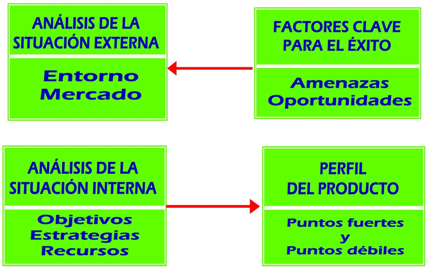
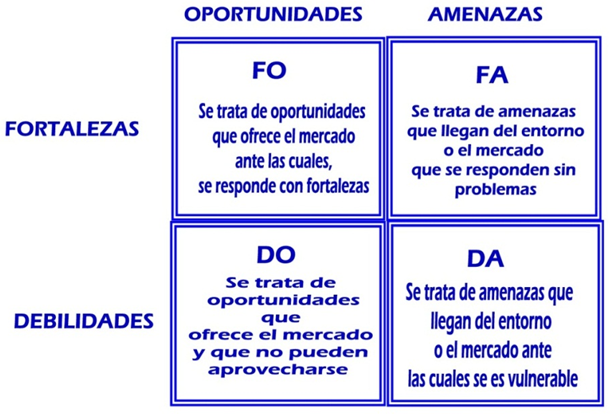

En esta fase, el hotel debe conocer su situación dentro del mercado y cuáles son sus posibilidades de permanecer en él o mejorar su posición. Para llevar a cabo estas actuaciones, la técnica más habitual es el análisis DAFO.
5.1.2.- FASE SEGUNDA
Análisis DAFO.
Es una de las técnicas más empleadas en todo proceso de planificación estratégica. Se realiza a partir de un cuadro de doble entrada donde se registran las FORTALEZAS y DEBILIDADES para responder a las AMENAZAS que el mercado remite o a las OPORTUNIDADES que ese mismo mercado ofrece.
Es una de las técnicas más empleadas para realizar, desde el marketing, un diagnóstico de la situación. Así, la detección de puntos fuertes, ante amenazas u oportunidades, genera una ventaja competitiva que podrá suponer un valor añadido.
A continuación se diseña un gráfico del esquema general de diagnóstico de la situación:


El resultado del análisis de un producto hotelero sobre el que se elabora un diagnóstico, atendiendo a las cuatro variables que genera a partir de:
- Fortalezas y debilidades, que proceden siempre del interior.
- Amenazas y oportunidades, que llegan siempre del exterior. Están presentes en el mercado y el producto reacciona ante ellas con sus fortalezas y debilidades.
Obra publicada con Licencia Creative Commons Reconocimiento Compartir igual 4.0